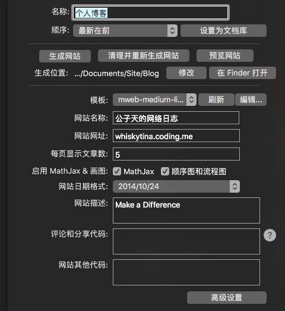
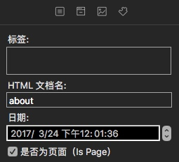
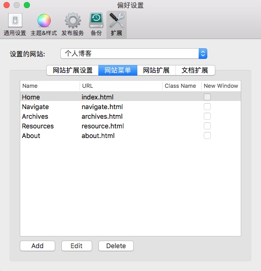

俗话说，不动笔墨不读书。我的记性不好，更需要笔记来辅助我消化和吸收书本上的知识。最早在大学读书的时候，一直是用的纸质的笔记本。然而在后来某一次搬家的时候这些笔记本不慎丢失，甚是可惜。这也是纸质笔记的弊端，不易保管。因此，我开始寻找一款可靠的电子版的笔记系统。
我对电子笔记系统有这么几点要求：
- 支持Markdown标记语言。由于专业原因需要大量的公式书写，更要兼容数学公式的Latex语法。
- 支持多机同步。这样，我在公司的电脑上对笔记所做的修改，在家里的笔记本上也能够看到。同时，多机同步也降低了数据丢失的风险。
- 界面简洁颜值高。在一个花里胡哨的系统上谁也做不到沉浸式的书写吧。
- 提供完善的阅读模式。毕竟笔记是用来回顾的。不支持阅读模式的笔记系统都是在耍流氓。
- 能够随时随地方便快捷地将笔记分享给他人观看。毕竟知识的分享也是一种乐趣。（博客就是一种很好的分享方式。）
尝试过一段时间的印象笔记+马克飞象的组合。作为一款专业的笔记应用，给我的感觉是操作过于复杂。比如，我想对之前做的笔记做一些修改，我需要打开印象笔记，然后点击右上角的红色书签，切换到马克飞象里进行操作。此外，印象笔记的阅读体验也一直为人所诟病。
直到有一天，我遇到了MWeb。感谢MWeb的作者开发了这么一款良心的作品，完美解决了我对笔记系统的所有需求。目前，MWeb是我唯一还在使用的笔记&博客管理软件。
先看下MWeb官网上对自己的定义吧：一款专业的Markdown写作、记笔记、静态博客生成软件。在实际使用中，MWeb完美地诠释了什么叫做专业。
首先，MWeb天生就是一款Markdown写作软件，支持包括Latex公式和流程图在内的多种扩展标记。黑色主题更是极大地提升了用户的写作体验。MWeb包括外部和文档库两种模式。二者的区别在官网上有详细的描述。简单来说，外部模式是以外部文件夹的形式对文档进行管理，而文档模式则是通过内部的一个数据库来对文档进行管理，也因此有着更强的管理能力。我采用的是后者。
其次，MWeb的文档库模式支持一键生成静态博客，配合Github Pages就可以部署自己的个人博客站点。搭建个人博客有很多好处。首先，博客舒适的阅读体验可以帮助你更好的回顾你的学习历程；其次，博客也是你向外界展示自己学习能力的名片；最后，通过博客，你可以认识更多志同道合的人。我曾经试过在CSDN、博客园等专业站点上发布自己的博客，然而我觉得有一个自己的独一无二的个人站点更加酷炫。顺便插一句，MWeb也支持一键发布文章到博客园等站点，以及图片上传图床等功能。
简单说一下MWeb上静态网站部署的过程。
首先，右键选中你要发布的目录，点击“编辑->设置为静态网站”，便可以设置生成网站时要用到的一些基本属性（例如模板，网站名称，每页显示文章数等）。这些设置会存储在文档库里，利用后面提到的同步方法，可以在多台机器之间共享。值得注意的是，生成网站的位置是在偏好设置里修改，独立于文档库。因此，不同机器上生成网站的绝对路径可以并不相同。

这里有一个小trick。每篇文档在生成网站时都可以指定一个HTML文档名。如果同时勾选了“Is Page”选项，就可以在网站的高级设置里插入顶层菜单。如下图所示：


点击生成网站按钮，切入到事先设定的网站生成目录下，接下来，便是将生成的静态网站上传到Github Pages上展示。
首先是Github Pages的配置。新建一个repository，名称为username.github.io。然后在网站的生成目录下执行下面的命令：
git init
git add .
git commit -m "first commit"
git remote add origin https://github.com/username/username.github.io.git
git push --force origin master
稍等片刻，打开浏览器，输入你设定的网址，便可以进行浏览了。
以后若有文档的更新，只需键入add、commit、push这三行命令即可。
MWeb也支持多机同步。这个功能比较隐蔽，事实上要结合第三方同步盘才能够实现。打开MWeb的偏好设置，将文档库位置设置成某个第三方网盘的同步盘路径下（我选择的是支持WebDav的坚果云），即可实现在多台机器上文档的无缝编辑。
最后，MWeb超高的颜值（尤其是Dark主题），流畅的快捷操作，让人可以专注于写作之中不受界面的干扰。
唯一遗憾的是，MWeb的IOS客户端目前尚不支持通过WebDav的方式打开文档库，这使得移动端的写作同步目前只能通过iCloud实现（然而考虑到国内龟速的网络环境……）。不过，作者已经承诺在将来的版本中实现这一功能。且拭目以待吧！